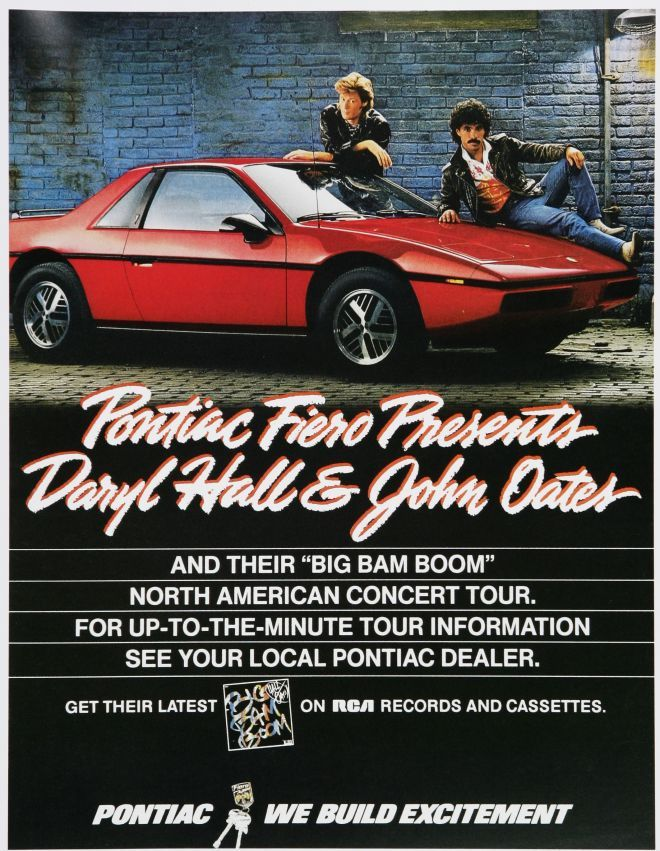
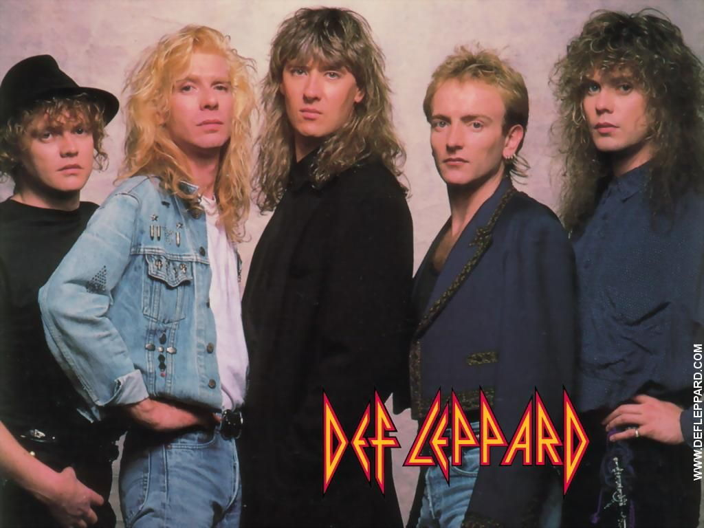
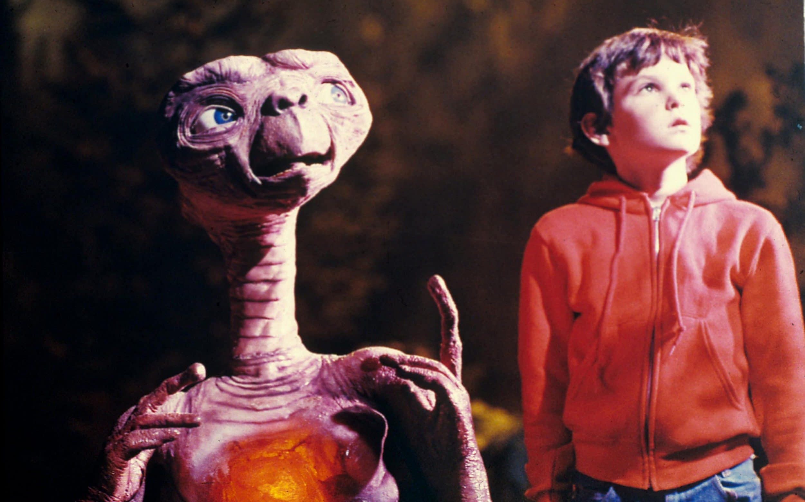

The 1980s were fueled by spunky hits and fast cars. This ad that directs viewers to call their local Pontiac dealership for information on the latest Hall and Oats tour is one of the most 80's pictures I could find.
Fasion has always been one of the best indicators for time. One of the latest trends, shown by this 80's photo of Def Leppard, was light jeans.
Last but not least, the 80's were extremely influential for film. The best of science fiction and fantasy were emerging. From Star Wars to Labrynth, E.T. to Gremlins, the imagination and wonder that came from the 1980s helped shape pop culture like never before.
